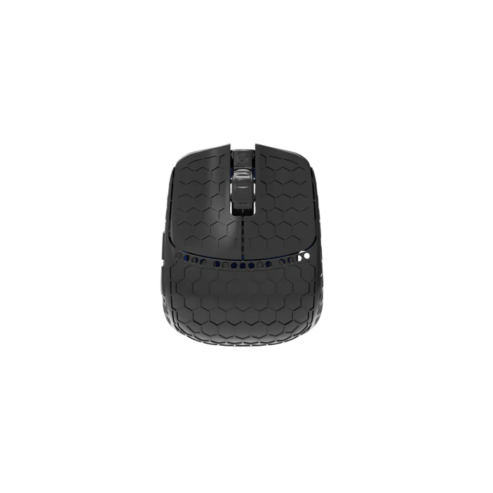
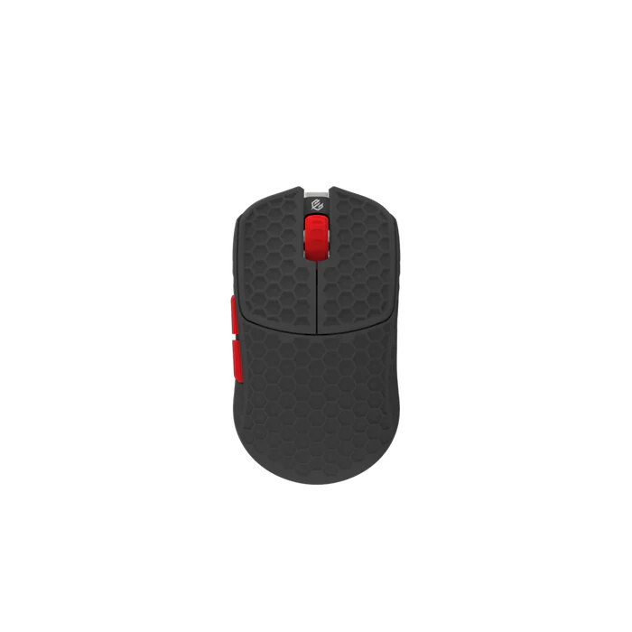

ТАМ ГДЕ ПЕРИФЕРИЯ ТАМ И МЫ

Беспроводная мышь G-Wolves Fenrir Max 8K ~ 22,4 г, Usb типа C
ОБЗОР
характеристики
характеристики
Сенсор: Pixart PMW-3950 (с функцией наклона сенсора)
Максимальное разрешение (DPI): до 30,000
Скорость отслеживания: до 750 IPS
Вес: примерно 22-24 грамма
Связь: беспроводная 2.4 ГГц, polling rate до 8000 Гц;
Связь: проводная 2.4 ГГц, polling rate 1000 Гц;
Размеры: длина около 75 мм, ширина 63 мм, высота 27 мм
Кнопки: 5 программируемых, ресурс около 20 миллионов нажатий
Материал корпуса: текстура honeycomb для комфорта
Оптимизирована под пальцевый хват, высокая точность и скорость
Провод: ультра-гибкий, длина 1.6 м (для проводного режима)
MCU: Nordic 52840 (возможные обновления)
вам может быть интерестно

G-Wolves htx Mini 8K
ОБЗОР
G-Wolves htx Mini 8K
ОБЗОР
G-Wolves htx Mini 8K
ОБЗОР
G-Wolves htx Mini 8K
ОБЗОР